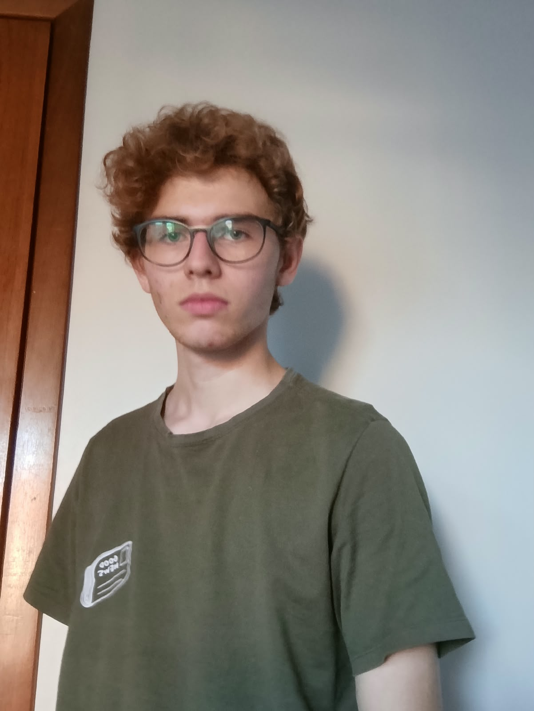

SOU UMA PESSOA DIVERTIDA QUE ADORA FAZER VARIAS COISAS COM AMIGOS.
nasci dia 24/10/2011.

Localização:Toledo, PR/BR.
Nasci no município de Toledo, no estado do Paraná. Conhecida como a Capital Paranaense do Agronegócio, a cidade destaca-se nacionalmente por sua elevada qualidade de vida, forte tradição esportiva e por ser um importante polo educacional na região Oeste. .
Minha história também está profundamente ligada ao bairro Vila Becker, onde cresci e construí minhas melhores lembranças. O bairro homenageia a família Becker, pioneira na colonização local, e hoje abriga o campus da Unioeste, unindo o dinamismo universitário à tranquilidade de suas ruas.